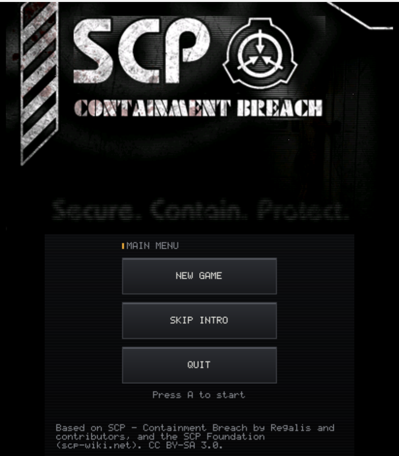
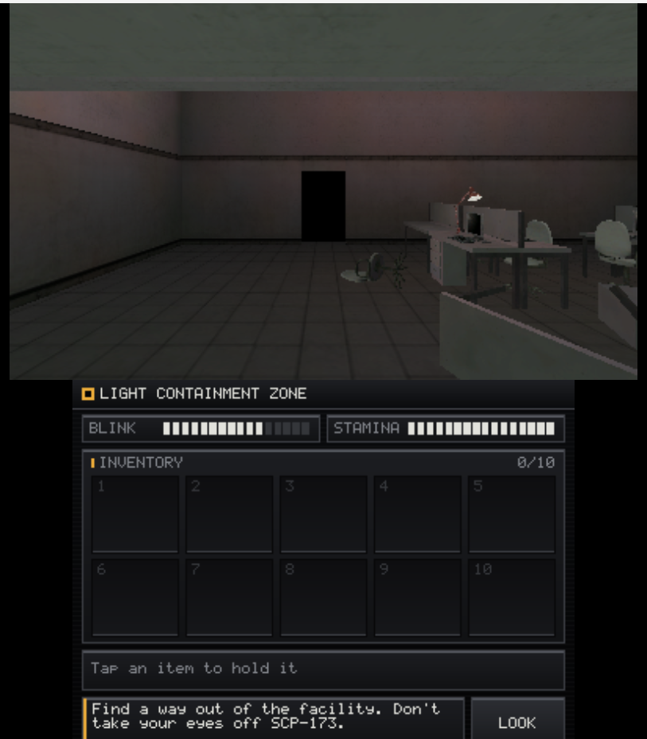
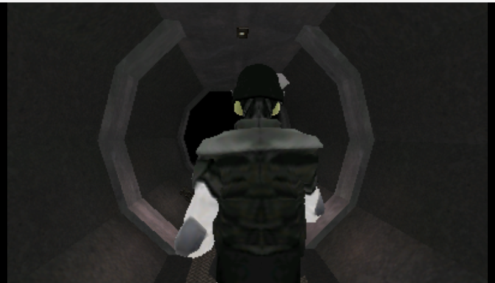
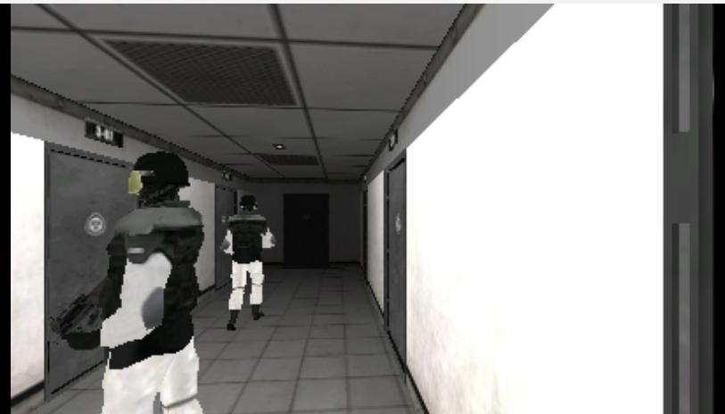
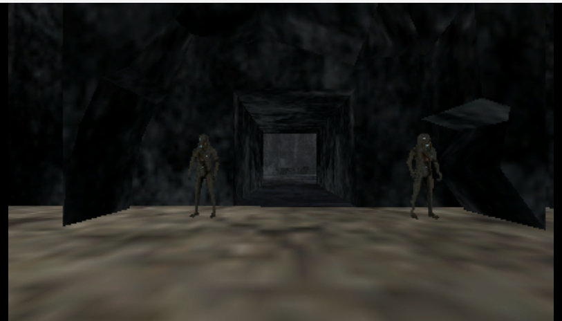

SCP - Containment Breach for 3DS
An unofficial native port for the Nintendo 3DS and New 3DS. By RedHairHobitGoblin.


What's in it
The whole facility: randomly generated light containment, heavy containment and entrance zones, every room, door, keycard and item, and all of the game's events, from the intro with Agent Ulgrin to both Gate A and Gate B endings. SCP-173, 106, 096, 049, 939, 966, 035, 860-2, 1499-1 and the rest are all there, along with SCP-914, 294, 1162, the femur breaker, the maintenance tunnels, the forest and dimension 1499. The visuals are toned down to fit the hardware. Progress saves to the SD card.



Install
You need a 3DS or New 3DS with custom firmware (Luma3DS). There are two builds; pick one.
- CIA (shows up on the HOME Menu): copy
SCPCB3DS.ciato the SD card and install it with FBI. - 3DSX (Homebrew Launcher): copy
scpcb3ds.3dsxtosdmc:/3ds/and launch it from the Homebrew Launcher.
For sound, the console needs its DSP firmware dumped once: run DSP1 if you haven't already.
Controls
| Circle Pad | Move |
| C-Stick | Look (New 3DS). On an Old 3DS, tap LOOK on the touch screen and drag |
| A or L | Use: doors, items, levers, buttons |
| X or R | Blink (hold to keep your eyes shut) |
| Y or D-Pad Up | Sprint |
| B or D-Pad Down | Crouch |
| Touch screen | Inventory, documents, keypads and the S-NAV map |
| START | Pause, save and load |